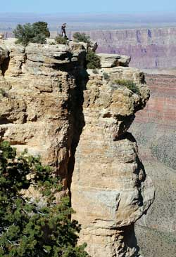

Grand Canyon at Cape Royal The Grand Canyon in northern Arizona is one of the most stunning natural phenomena in the world. Reading about it, seeing photos, even watching documentary movies on a cinema screen do nothing to prepare you for that moment when you first step up to the edge. The North Rim of the Canyon rises a thousand feet (more than 300 meters) higher than the South Rim, and is heavily forested. After driving through lush grassland and winding forest roads, the Canyon suddenly opens up before you in all its jaw-dropping magnificence.
Leave it as it is. You cannot improve on it. The ages have been at work on it, and only man can mar it.
Theodore Roosevelt, May 6, 1903
From biting wind to warm updraft
Because of its altitude, access to the North Rim through the Kaibab National Forest is cut off by heavy snow from late October to mid-May each year.  The approach to the North Rim of the Grand Canyon through Kaibab National Forest Even during the summer months, a biting wind often blows across the grasslands in the forest, catching the ill-prepared visitor by surprise. Then, as you step out of your car at Point Imperial, a warm blast of air greets you, rising from the Colorado River, nearly 6,000 feet (1,800 meters) below. Daytime temperatures at the bottom of the Canyon often exceed 100° F (38° C), causing a warm updraft that mixes pleasantly with the cooler air of the plateau. On a clear summer's day, from Point Imperial you can see for miles across the Navajo Indian Reservation and Painted Desert to the East.
The approach to the North Rim of the Grand Canyon through Kaibab National Forest Even during the summer months, a biting wind often blows across the grasslands in the forest, catching the ill-prepared visitor by surprise. Then, as you step out of your car at Point Imperial, a warm blast of air greets you, rising from the Colorado River, nearly 6,000 feet (1,800 meters) below. Daytime temperatures at the bottom of the Canyon often exceed 100° F (38° C), causing a warm updraft that mixes pleasantly with the cooler air of the plateau. On a clear summer's day, from Point Imperial you can see for miles across the Navajo Indian Reservation and Painted Desert to the East.
| Length: | 277 miles (446 km) |
|---|---|
| Widest point: | 18 miles (29 km) |
| Depth: | 1 mile (1.6 km) |
Head for heights required
 Angel's Window Driving south across the Walhalla Plateau, you come to Cape Royal and the spectacular Angel's Window, a large natural arch that has been eroded out of a slender outcrop that protrudes into the Canyon. Walking over the arch to the viewpoint requires a strong stomach and head for heights, even though there are safety rails on both sides.
Angel's Window Driving south across the Walhalla Plateau, you come to Cape Royal and the spectacular Angel's Window, a large natural arch that has been eroded out of a slender outcrop that protrudes into the Canyon. Walking over the arch to the viewpoint requires a strong stomach and head for heights, even though there are safety rails on both sides.
The safety rails on Angel's Window are the exception, rather than the rule. Most places along the edge of the Canyon have no guard rails at all. This comes as something of a surprise in these days of safety consciousness, but after a while, you come to appreciate the fact that the National Park Service has left the Grand Canyon unspoiled as much as possible. Footpaths are clearly marked and well-made. Visitors are left responsible for their own safety.